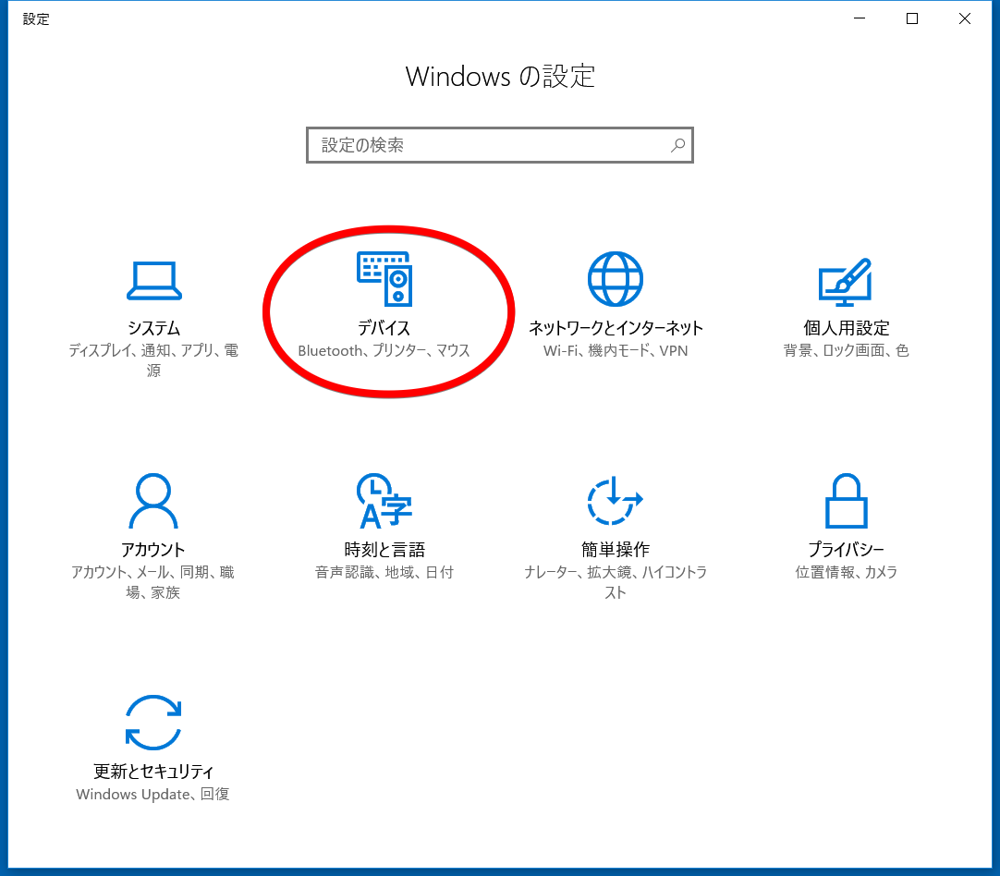
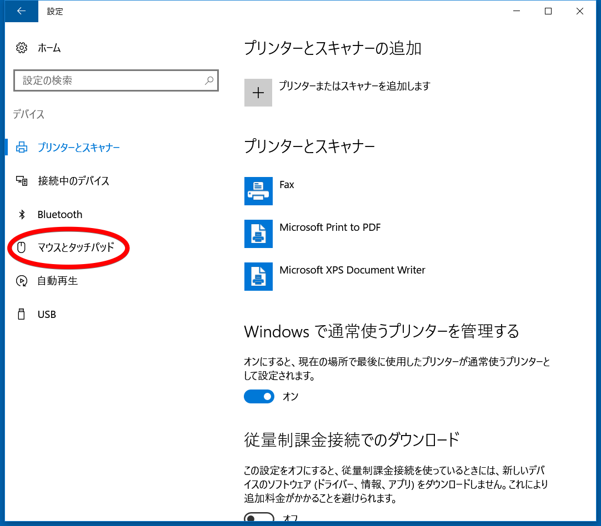
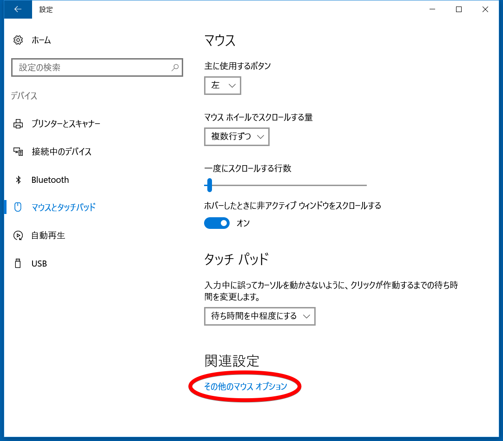
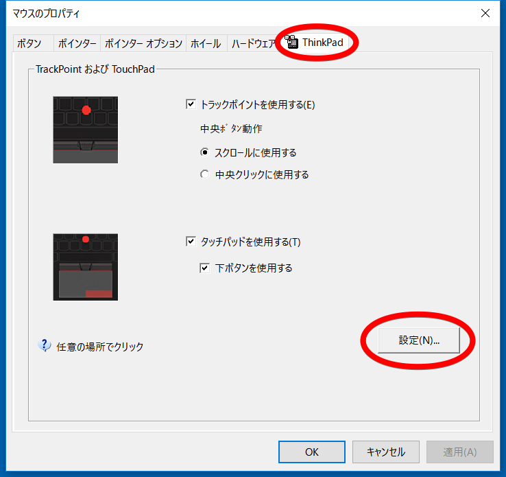
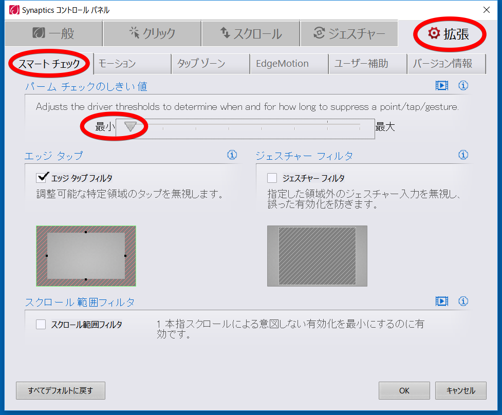

はじめに
英字キーボードのThinkpad X260でWindows 10を使っていてレジストリで左ControlキーとCapsLockを入れ替えると、Control+タップが効かないという事態になりました。
Windowsノート機で左CtrlとCaps Lockを入れ替えようとしたらハマった件（犯人はSynaptics） - Tetsu=TaLowの雑記（はてブロ版） を参考に設定したら解決できたのでメモです。
レジストリで左ControlキーをCapsLockを入れ替える
設定するときに毎回検索していたのでメモ。 以下のファイルを保存して、エクスプローラで選択、右クリックでポップアップメニューを開いて[結合]メニューを選択。 警告が出ますが進んで設定を完了し、Windowsを再起動すると設定が有効になります。
1 2 3 4 | Windows Registry Editor Version 5.00
[HKEY_LOCAL_MACHINE\SYSTEM\CurrentControlSet\Control\Keyboard Layout]
"Scancode Map"=hex:00,00,02,00,00,00,00,00,03,00,00,00,1d,00,3a,00,3a,00,1d,00,00,00,00,00
|
Synapticsタッチパッドの設定でControl+タップを使えるようにする
上の手順で左ControlキーをCapsLockを入れ替えるとControl+タップが効かなくなりました。 Chromeでリンクを別タブで開くのにControl+タップを使っているので非常に困ります。 リンクを選んで右クリック(2本指タップ)でポップアップメニュー→[新しいタブで開く(T)]メニューという手はありますが面倒でした。
Windowsノート機で左CtrlとCaps Lockを入れ替えようとしたらハマった件（犯人はSynaptics） - Tetsu=TaLowの雑記（はてブロ版） と同様の手順で解決できました。
ただし私の環境ではSynapticsタッチパッドドライバの設定項目名が変わっていて「パームチェックのしきい値」となっていました。これを最小にすれば大丈夫でした。
手順をメモしておきます。
コントロールパネルを開いて[デバイス]を選択します。
画面左の一覧で[マウスとタッチパッド]をクリックします。
画面右下の[その他のマウスオプション]ボタンをクリックします。
[ThinkPad]タブに切り替えて[設定]ボタンをクリックします。
[拡張]タブと[スマート チェック]タブを選び[パーム チェックのしきい値]のスライダーを最小にします。
